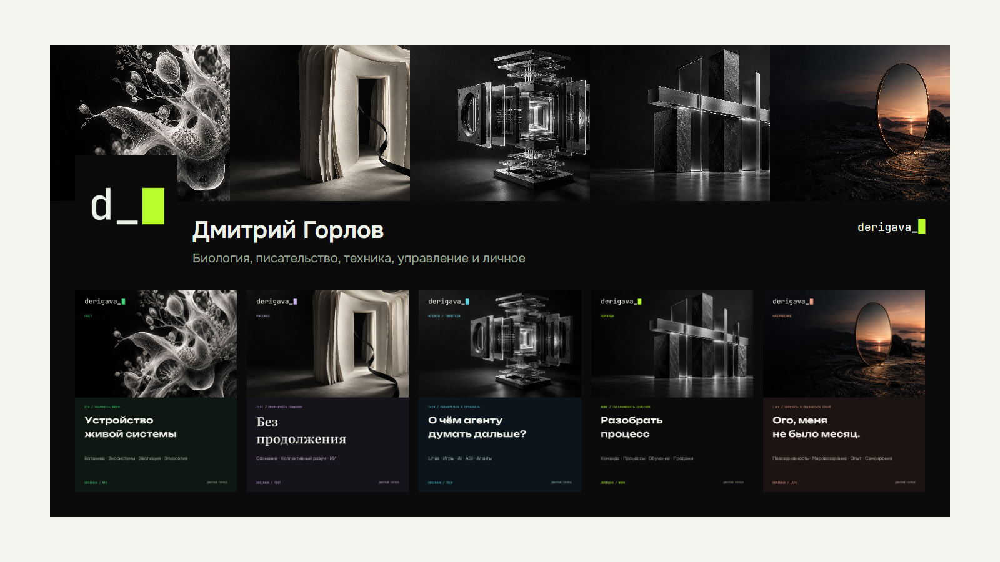
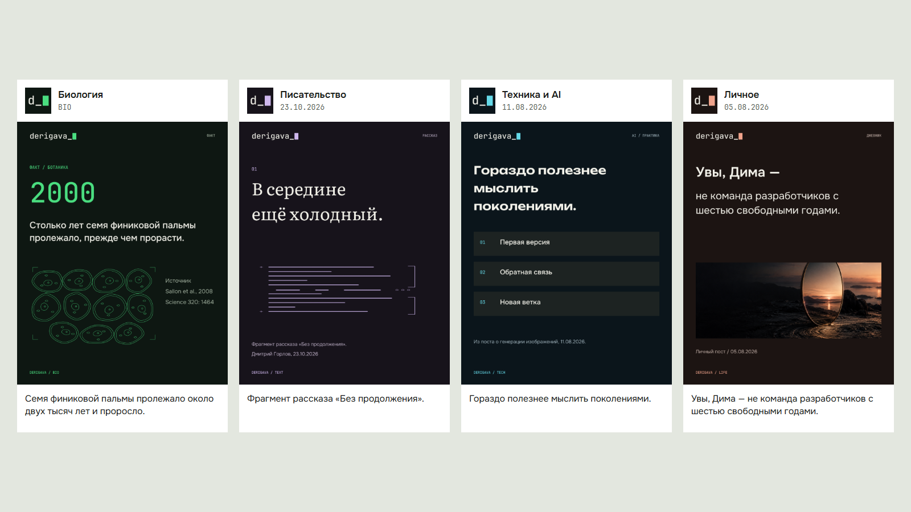
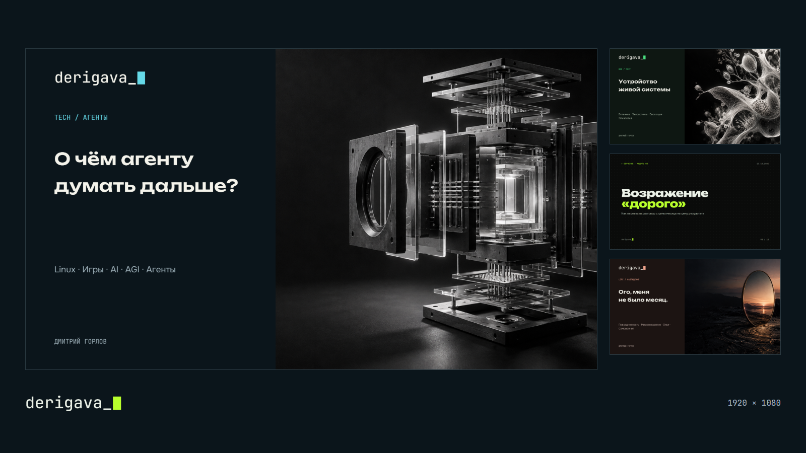
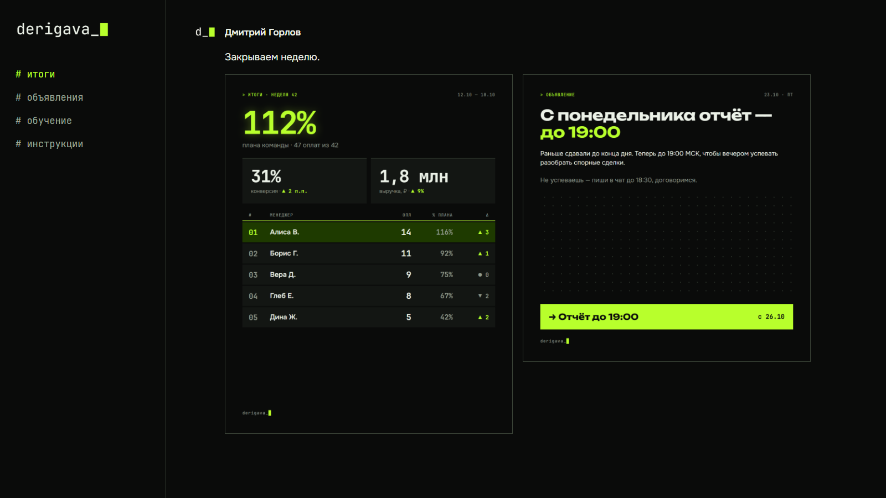

Дмитрий Горлов / Dmitriy Gorlov




BIO
Ботаника · Экосистемы · Эволюция · Эпизоотия
Точная формулировка, любопытство, границы вывода. Источник не прячется за красивой картинкой.
TEXT
Сознание · Коллективный разум · ИИ
Бытовая деталь, внутренний ритм, пауза. История может не давать удобного вывода.
TECH
Linux · Игры · AI · AGI · Агенты
Разговорное объяснение, техническая конкретика, опыт и гипотезы с явными границами.
WORK
Команда · Процессы · Обучение · Продажи
Конкретика и уважение. Ирония возможна, публичное унижение людей нет.
LIFE
Повседневность · Мировоззрение · Опыт · Самоирония
Разговорность, самоирония, честный незавершённый опыт. Не каждую заметку нужно превращать в урок.
Макет открывается в SVG по нажатию. Иконки используют currentColor, цвет задаётся в редакторе.